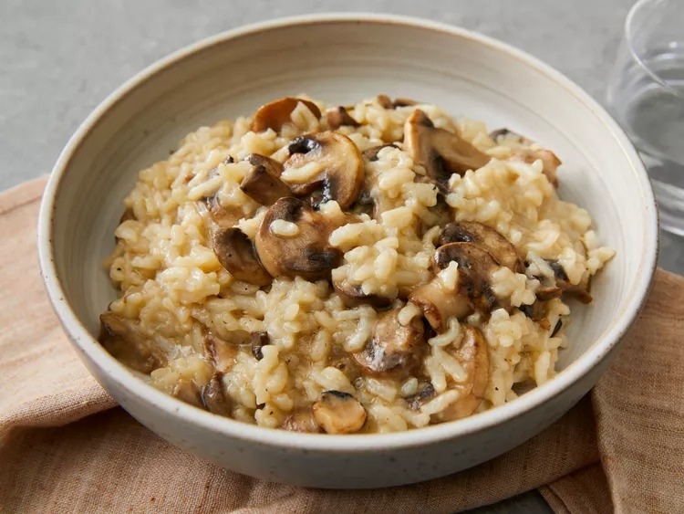

Mushroom Risotto

Description
This creamy Instant Pot risotto with softened mushrooms and a sprinkling of cheese will seem like a dish ordered at a restaurant instead of made at home.
Ingredients:
- ¼ cup unsalted butter
- ¼ cup olive oil
- 3 cups diced mushrooms
- 1 cup chopped onion
- 1 sprig rosemary
- 1 ½ cups Arborio rice
- ¾ cup white wine
- 1 quart chicken stock
- salt and ground black pepper to taste
- ½ cup grated Parmesan cheese
Steps:
- Turn on a multi-functional pressure cooker (such as Instant Pot) and select Saute function. Add butter and olive oil; stir until butter melts, about 2 minutes. Add mushrooms; cook, stirring occasionally, until slightly softened, about 3 minutes. Stir in onion; cook for 2 minutes. Add rosemary sprig; cook for 1 minute.
- Stir rice into the pot until each grain is coated with butter and olive oil mixture, about 2 minutes. Pour in wine; simmer for 3 minutes.
- Pour in chicken stock, stirring to scrape the sides of the pot. Simmer for 1 minute.
- Close and lock the lid. Turn the venting knob to sealing. Select high pressure according to manufacturer's instructions; set timer for 6 minutes. Allow 10 to 15 minutes for pressure to build.
- Tap venting knob a few times with a wooden spoon or spatula. Stand back; turn knob to point at vent. Remove lid when pressure is released, about 5 minutes.
- Stir risotto until creamy, about 1 minute. Discard rosemary sprig. Season with salt and pepper. Stir in Parmesan cheese until melted and combined.
- Serve hot and enjoy!